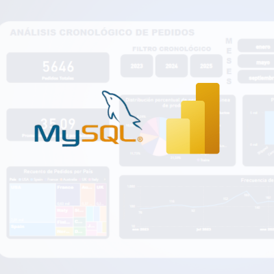

Ver proyecto ↗Análisis de pedidos de clientes
- Problema
- Entender cómo se distribuyen los pedidos de clientes en el tiempo.
- Qué hice
- Modelé la base en MySQL, la procesé con Pandas y armé el análisis descriptivo por día, mes y año en Power BI.
- Resultado
- Convertí un CSV en un modelo relacional en estrella (tabla de hechos y 3 dimensiones) en MySQL, conectado a un dashboard de Power BI con filtros por año y mes y gráficos de ventas por línea de producto, estado de pedido y país.